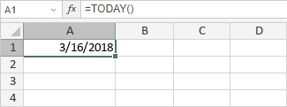

TODAY Funkcija
TODAY funkcija je jedna od date i time funkcija. Koristi se da doda trenutni dan u formatu MM/dd/yy. Ova funkcija ne zahteva argument.
Sintaksa
TODAY()
Napomene
Kako primeniti TODAY funkciju.
Primeri
Slika ispod prikazuje rezultat koji vraća TODAY funkcija.
